Reference sheets
Start here if you want the whole picture before the detail.
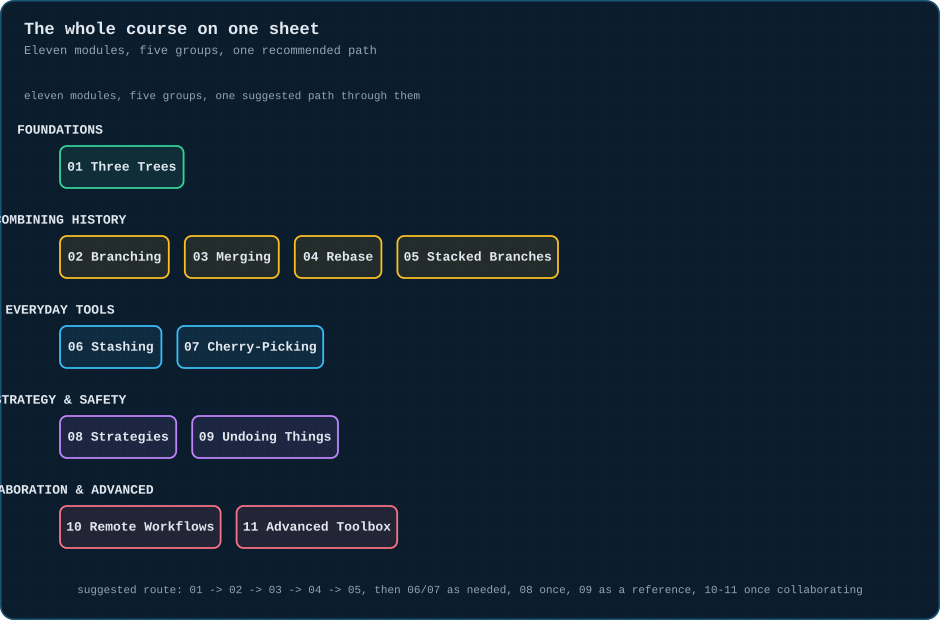
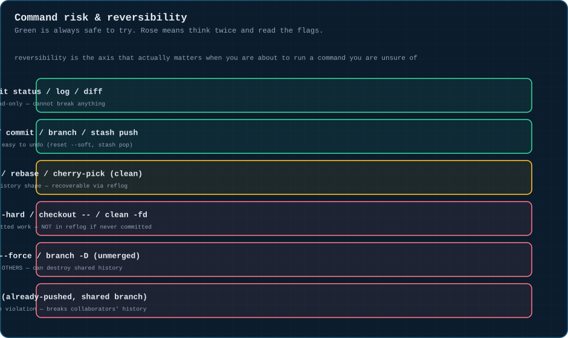
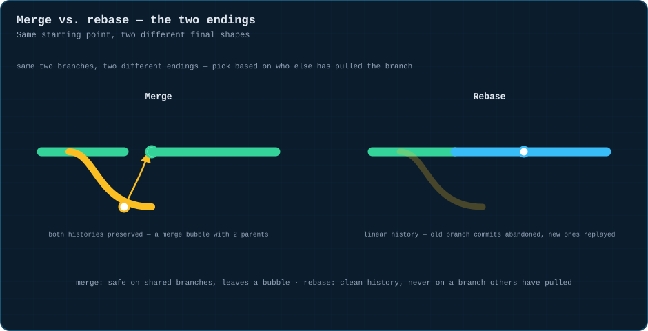
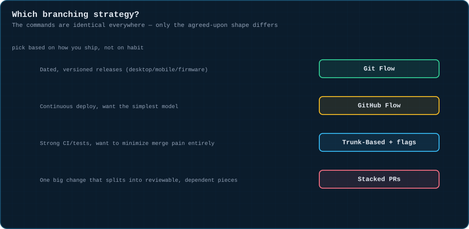
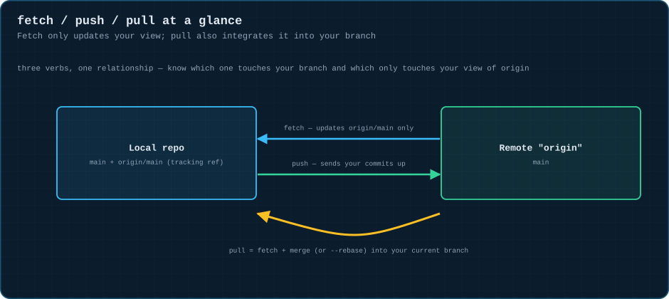
🧱 Foundations
🔀 Combining history
🧰 Everyday tools
🧭 Strategy & safety
🌐 Collaboration & advanced
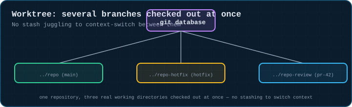
📐 Blueprints
One static anatomy diagram per module.
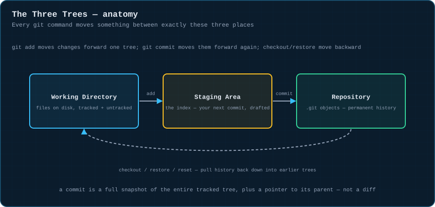
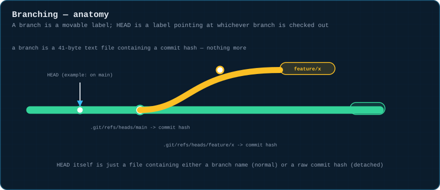
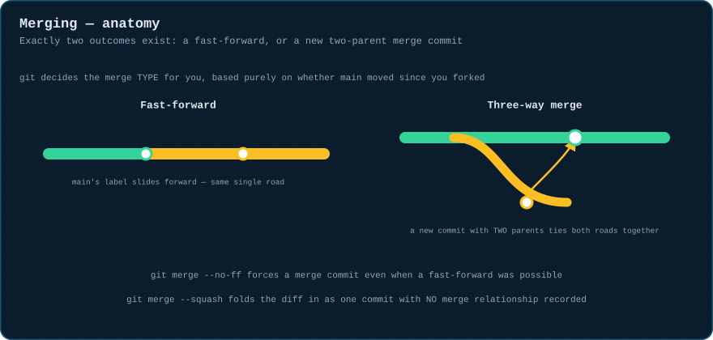
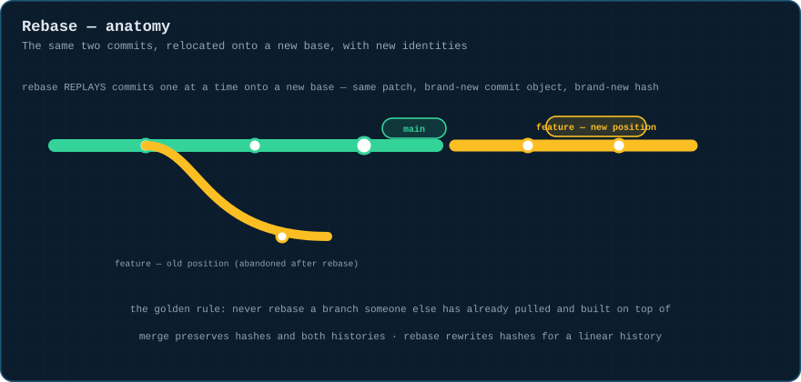
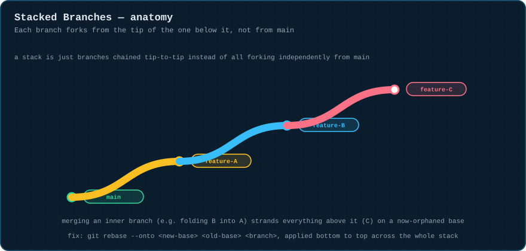
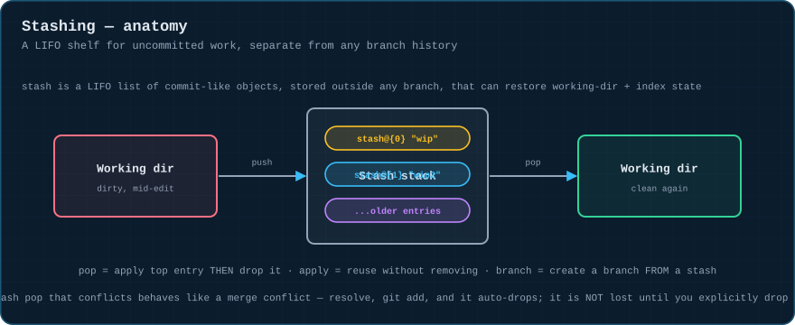
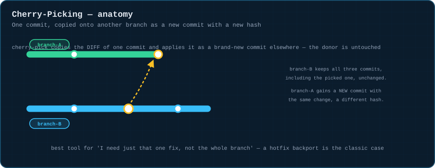
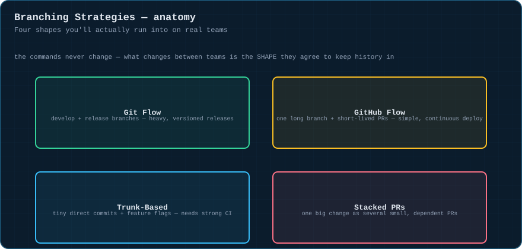
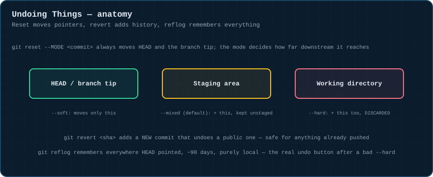
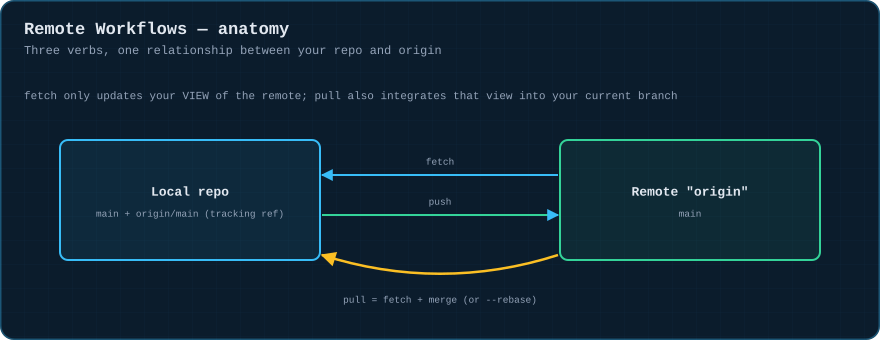
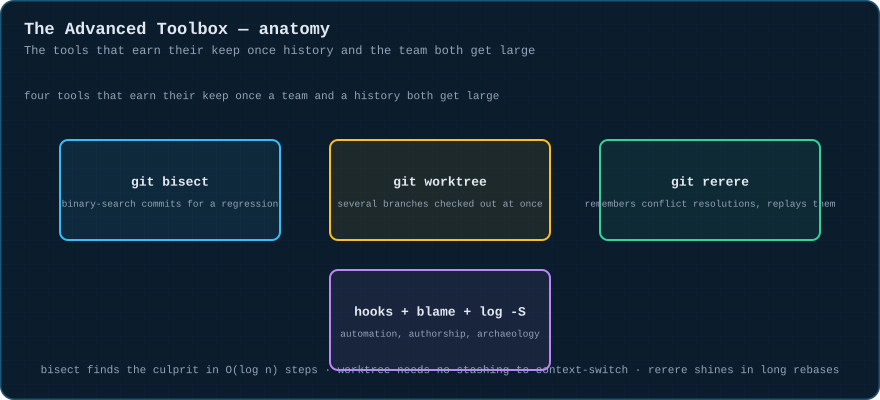